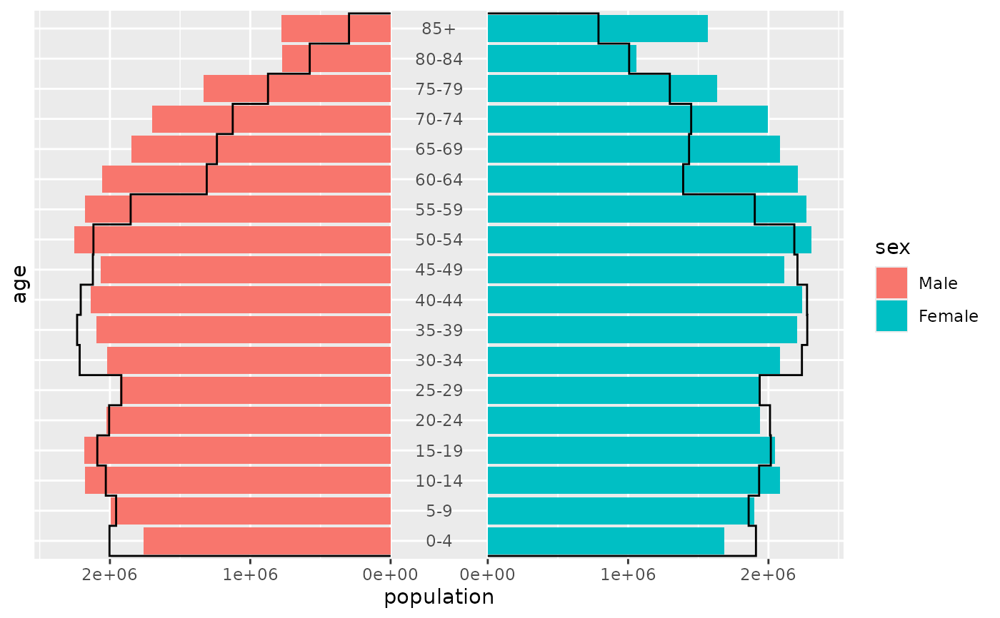

geom_pyramid_outline() traces the outer edge of a pyramid as a stepped
line, without filling the bars. Drawn over geom_pyramid(), it compares two
populations, such as two census years or a region and the whole country.
It aggregates the data in the same way as geom_pyramid(), so it accepts
individual records and aggregated data alike.
Usage
geom_pyramid_outline(
mapping = NULL,
data = NULL,
stat = "pyramid",
position = position_pyramid(stack = FALSE),
...,
denominator = NULL,
lineend = "butt",
linejoin = "mitre",
linemitre = 10,
na.rm = FALSE,
orientation = NA,
show.legend = NA,
inherit.aes = TRUE
)Arguments
- mapping
Set of aesthetic mappings created by
aes(). If specified andinherit.aes = TRUE(the default), it is combined with the default mapping at the top level of the plot. You must supplymappingif there is no plot mapping.- data
The data to be displayed in this layer. There are three options:
If
NULL, the default, the data is inherited from the plot data as specified in the call toggplot().A
data.frame, or other object, will override the plot data. All objects will be fortified to produce a data frame. Seefortify()for which variables will be created.A
functionwill be called with a single argument, the plot data. The return value must be adata.frame, and will be used as the layer data. Afunctioncan be created from aformula(e.g.~ head(.x, 10)).- stat
The statistical transformation to use on the data for this layer. The default,
"pyramid", isstat_pyramid().- position
A position adjustment. The default mirrors the left side without stacking, as
position_pyramid(stack = FALSE), so that one line per side follows the total. The outline follows the side set bycoord_pyramid(left = ...).- ...
Other arguments passed on to
ggplot2::layer(), such as fixed aesthetics likecolour = "black"orlinewidth = 0.8.- denominator
NULL(the default) shows counts."total"shows each bar as a proportion of all rows in the panel, and"side"as a proportion of the rows on its side.- lineend
Line end style (round, butt, square).
- linejoin
Line join style (round, mitre, bevel).
- linemitre
Line mitre limit (number greater than 1).
- na.rm
If
FALSE, the default, missing values are removed with a warning. IfTRUE, missing values are silently removed.- orientation
The orientation of the layer. The default (
NA) automatically determines the orientation from the aesthetic mapping. In the rare event that this fails it can be given explicitly by settingorientationto either"x"or"y". See the Orientation section for more detail.- show.legend
logical. Should this layer be included in the legends?
NA, the default, includes if any aesthetics are mapped.FALSEnever includes, andTRUEalways includes. It can also be a named logical vector to finely select the aesthetics to display. To include legend keys for all levels, even when no data exists, useTRUE. IfNA, all levels are shown in legend, but unobserved levels are omitted.- inherit.aes
If
FALSE, overrides the default aesthetics, rather than combining with them. This is most useful for helper functions that define both data and aesthetics and shouldn't inherit behaviour from the default plot specification, e.g.annotation_borders().
Details
Each side gets one line, and so does each subgroup that fill, colour,
linetype, linewidth or alpha sets apart. The line starts at zero below
the youngest age group, follows the value of each group across its whole
band, and returns to zero above the oldest. It drops to zero across an age
group with no data.
Aesthetics
The age and value axes are as in geom_pyramid(), and the side of each line
comes from side, fill or colour, as described in
position_pyramid(). The line is styled by colour, linewidth,
linetype and alpha.
See also
geom_pyramid() for the bars.
Examples
library(ggplot2)
france <- subset(europe_pop, country == "France")
# 2024 as bars, 2004 as an outline
ggplot(france, aes(x = population, y = age, fill = sex)) +
geom_pyramid(data = subset(france, year == 2024)) +
geom_pyramid_outline(data = subset(france, year == 2004)) +
coord_pyramid(age_axis = "centre")
